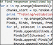

Liberty Hamilton
Curriculum vitae
Current Position
University of Texas at Austin
Research Interests
Education
University of California, San Francisco, (2014-2017).
Postdoctoral Fellow, Department of Neurological Surgery and Center for Integrative Neuroscience. Laboratory of Dr. Edward Chang.
University of California, Berkeley, (2008-2013).
PhD in Neuroscience, Helen Wills Neuroscience Institute.
Advanced to candidacy April 2010. PhD conferred December 2013. Dissertation title: "Modulation and manipulation of sound representation in the auditory cortex." Advisor: Dr. Shaowen Bao.
Scripps College, Claremont, California (2002-2006).
BA in Neuroscience, cum laude.
Additional concentrations in Spanish and Music.
Universidad de Buenos Aires and Pontífica Universidad Católica Argentina, Buenos Aires, Argentina (Spring 2005).
Coursework in Argentinean music, literature, and documentary film.
Publications
Breshears J, Hamilton LS, Chang EF (2018). Spontaneous neural activity in the posterior superior temporal gyrus recapitulates tuning for speech features. Frontiers in Human Neuroscience. 18 September 2018.
Hamilton LS, Huth AG (2018). The revolution will not be controlled: natural stimuli in speech neuroscience. Language, Cognition, and Neuroscience. 2018: 1-10.
Hamilton LS*, Edwards E*, Chang EF (2018). A spatial map of onset and sus- tained responses to speech in the human superior temporal gyrus. Current Biology. *co-first authors. Also see Video abstract
Hamilton LS, Chang DL, Lee MB, Chang EF (2017). Semi-automated anatomical labeling and inter-subject warping of high-density intracranial recording electrodes in electrocorticography. Frontiers in Neuroinformatics 11(62).
Baud MO, Kleen JK, Anumanchipalli GK, Hamilton LS, Tan Y-L, Knowlton R, Chang EF (2017). Unsupervised Learning of Spatiotemporal Interictal Discharges in Focal Epilepsy. Neurosurgery nyx480.
Tang C, Hamilton LS, Chang EF (2017). Intonational Speech Prosody Encoding in Human Auditory Cortex. Science 357(6353): 797-801.
Hamilton LS*, Edwards E*, Chang EF (2016). Parallel streams define the temporal dynamics of speech processing across human auditory cortex. Biorxiv 2016. (*co-first authors)
Muller LN, Hamilton LS, Edwards E, Bouchard KE, Chang EF (2016). Spatial resolution dependence on spectral frequency in human speech cortex electrocorticography. Journal of Neural Engineering, 13(5) 056013.
Cheung C*, Hamilton LS*, Johnson K, Chang EF (2016). The Auditory Representation of Speech Sounds in Human Motor Cortex. eLife 2016, 5:e12577. *Co-first authors.
Hullett PW, Hamilton LS, Mesgarani N, Schreiner CE, Chang EF (2016). Human Superior Temporal Gyrus Organization of Spectrotemporal Modulation Tuning Derived from Speech Stimuli. Journal of Neuroscience, 36(6): 2014-2026.
Pirnia T, Woods RP, Hamilton LS, Lyden H, Joshi SH, Asarnow RF, Nuechterlein K, Narr KL (2015). Hippocampal dysfunction during declarative memory encoding in schizophrenia and effects of genetic liability. Schizophrenia Research 161:2-3: 357-366.
Hamilton LS, Sohl-Dickstein J, Huth AG, Carels VM, Deisseroth K, Bao S (2013). Optogenetic Activation of an Inhibitory Network Enhances Feedforward Functional Connectivity in Auditory Cortex. Neuron 2013 Nov. 20; 80:4 1066-1076.
Elliott TM, Hamilton LS, Theunissen FE (2013). Acoustic structure of the five perceptual dimensions of timbre in orchestral instrument tones. Journal of the Acoustical Society of America 133:1 (389-404).
Narr KL, Szeszko PR, Lencz T, Woods RP, Hamilton LS, Phillips O, Robinson D, Burdick KE, DeRosse P, Kucherlapati R, Thompson PM, Toga AW, Malhotra AK, Bilder RM. DTNBP1 is associated with imaging phenotypes in schizophrenia. Human Brain Mapping 2009 Nov;30(11):3783-94.
Hamilton LS, Altshuler LL, Townsend J, Bookheimer SY, Phillips OR, Fischer J, Woods RP, Mazziotta JC, Toga AW, Nuechterlein KH, Narr KL. Alterations in functional activation in euthymic bipolar disorder and schizophrenia during a working memory task. Human Brain Mapping 2009 Dec;30(12):3958-69.
Lüders E, Sanchez FJ, Gaser C, Toga AW, Narr KL, Hamilton LS, Vilain E. Regional gray matter variation in male-to-female transsexualism. Neuroimage. 2009 Jul 15;46(4):904-7.
Narr KL, Hageman N, Woods RP, Hamilton LS, Clark K, Phillips O, Shattuck DW, ASarnow RF, Toga AW, Nuechterlein KH (2007). Mean diffusivity: A biomarker for CSF-related disease and genetic liability effects in schizophrenia. Psychiatry Research Neuroimaging. 2009 Jan 30;171(1):20-32.
Phillips OR, Nuechterlein KH, Clark KA, Hamilton LS, Asarnow RF, Hageman NS, Toga AW, Narr KL. Fiber tractography reveals disruption of temporal lobe white matter tracts in schizophrenia. Schizophrenia Research. 2009 Jan: 107(1):30-8.
Lüders E, Narr KL, Hamilton LS, Phillips OR, Thompson PM, Valle JS, Del'Homme M, Strickland T, McCracken JT, Toga AW, Levitt JG. Decreased callosal thickness in attention-deficit/hyperactivity disorder. Biological psychiatry. 2009 Jan 1; 65(1):84-8.
Hamilton LS, Levitt JG, O'Neill J, Alger JR, Lüders E, Phillips OR, Caplan R, Toga AW, McCracken J, Narr KL. Reduced white matter integrity in attention-deficit hyperactivity disorder. Neuroreport. 2008 Nov 19;19(17):1705-8.
Coscia DM, Narr KL, Robinson DG, Hamilton LS, Sevy S, Burdick KE, Gunduz-Bruce H, McCormack J, Bilder RM, Szeszko PR. Volumetric and shape analysis of the thalamus in first-episode schizophrenia. Human Brain Mapping 2009 Apr;30(4):1236-45.
Lüders E, Narr KL, Bilder RM, Szeszko PR, Gurbani MN, Hamilton LS*, Toga AW, Gaser C (2007). Mapping the Relationship between Cortical Convolution and Intelligence: Effects of Gender. Cerebral Cortex 2007 Dec 17
Ballmaier M, Narr KL, Toga AW, Elderkin-Thompson V, Thompson PM, Hamilton LS*, Haroon E, Pham D, Heinz A, Kumar A (2007). Hippocampal Morphology and Distinguishing Late-Onset From Early-Onset Elderly Depression. American Journal of Psychiatry 2007 Nov. 6.
Hamilton LS, Narr KL, Lüders E, Szeszko PR, Thompson PM, Bilder RM, Toga AW (2007). Asymmetries of cortical thickness: effects of handedness, sex, and schizophrenia. Neuroreport 18(14):1427-1431.
Lüders E, Narr KL, Bilder RM, Thompson PM, Szeszko PR, Hamilton LS*, Toga AW (2007). Positive correlations between corpus callosum thickness and intelligence. Neuroimage Jul 12.
Selected Abstracts
Hamilton LS*, Edwards E*, Chang EF. Parallel streams define the temporal dynamics of speech processing across human auditory cortex. September 2017, International Conference on Auditory Cortex, Banff, Canada.
Hamilton LS, Chang EF. Feature extraction in the human primary to parabelt auditory cortex. AREADNE 2016, Research in Encoding and Decoding of Neural Ensembles, Santorini, Greece.
Hamilton LS*, Edwards E*, Chang EF. A new human cortical map for temporal analysis of the natural auditory speech scene. Computational and Systems Neuroscience (Cosyne) 2016, Salt Lake City, UT. (Co-first authors)
Hamilton LS*, Edwards E*, Chang EF. Multi-scale functional parcellation of cortex by unsupervised activation clustering. Computational and Systems Neuroscience (Cosyne) 2015, Salt Lake City, UT. (Co-first authors)
Hamilton LS, Chang EF. Functional organization of speech perception in the human superior temporal gyrus. 5th International Conference on Auditory Cortex, Magdeburg, Germany. September 2014.
Hamilton LS, Sohl-Dickstein J, Huth AG, Bao S. Optogenetic stimulation of an inhibitory networks enhances feedforward connectivity in auditory cortex. Society for Neuroscience 2012, New Orleans, Louisiana. (Selected for SfN Student Travel Award).
Elliott T, Hamilton LS*, Theunissen F. Spectrotemporal Modulations Underlying Speech and Timbre Perception. Spectrotemporal Modulations Underlying Speech and Timbre Perception. Frontiers in Systems Neuroscience 2009. Conference Abstract: Computational and systems neuroscience. doi: 10.3389/conf.neuro.06.2009.03.234
Hamilton LS, Davis M, Oldfield C, Bao S. Representation of conspecific vocalizations in mouse auditory cortex. Society for Neuroscience 2011, Washington, D.C.
Hamilton LS, Yang S, and Bao S. The role of perisomatic inhibition in cortical processing of natural sounds. FENS-IBRO SfN-sponsored school: Causal Neuroscience - Manipulating Neural Circuits. Bertinoro, Italy, June 2011.
Hamilton LS*, Elliott T, Theunissen F. The dimensionality of musical timbre. Conference Abstract: Gordon Research Conference: Sensory Coding and the Natural Environment, Lewiston, Maine, 2010.
Hamilton LS*, Bao S. Top-Down Influences on Intensity Coding in Primary Auditory Cortex. Frontiers in Systems Neuroscience 2010. Conference Abstract: Computational and systems neuroscience. Frontiers in Systems Neuroscience 2010. Conference Abstract: Computational and systems neuroscience. doi:10.3389/conf.fnins.2010.03.00129
Work Experience
Design Editor, Berkeley Science Review. (January 2013-December 2013).
- Create layouts including photos and infographics for student-run magazine using Adobe Creative Suite
- Create accompanying web graphics using JavaScript d3.js.
Staff Research Associate, Laboratory of Neuro Imaging at UCLA (LONI), Los Angeles, California (July 2006-August 2009)
- Preprocessing and analysis of structural MRI, functional MRI, and DTI data.
- Delineation of neuroanatomical structures, registration of brain images, and maintenance of computer file records.
- Creation of shell scripts in support of LONI activities, e.g. brain registration, statistical analyses.
- Preparation of figures for scientific papers and presentations.
- Training collaborators on LONI software and interacting with other laboratory assistants on common projects.
- fMRI and DTI analysis in FSL, SPM5, MNI tools, and using in-house software (Automated Image Registration, etc.)
- MRI scanning in Allegra 3.0T and Sonata 1.5T Siemens scanners.
- Cataloguing and database management
- Stage manager and usher for student recitals
- Selected by Scripps College to mentor first year students and transfer students coming to the college.
- Taught fifth graders Spanish in an immersive environment (Spanish only) through games as well as spoken and written exercises.
- Perl script development in support of GPS Archive activities--scripts to inject GPS data into the UNAVCO SQL database, scripts to generate web pages based on PI-submitted GPS data, various scripts for extracting information from data files and GPS logs.
- JavaScript development of SiteViewer application--web-based mapping tool showing geographical location along with measured data for UNAVCO GPS campaigns across the globe.
- Data entry of GPS logsheets.
- Web site design and maintenance for web sites produced to present GPS data and information about campaigns with related photos and publications.
Honors
and Awards
| Tina E. Bangs Research Award - The Texas Speech-Language-Hearing Foundation. | March 2019 | $1,000 |
| Dean's Faculty Fellow - University of Texas at Austin | Spring 2020 | |
| Searle Scholars Nominee - Nominated to represent the University of Texas at Austin in the Searle Scholars Program for 2019. | 2018 | |
| UT Austin Faculty Summer Research Assignment | Summer 2018 | $9,000 |
| NVIDIA GPU Grant. Winner of Titan XP GPU through NVIDIA's GPU Grant Program, Academic Programs Team. December 2017. Co-PI on joint grant submitted on behalf of the NeuroComm Labs at UT Austin (PIs: Chandrasekaran, Hamilton, Henry). 3 GPUs awarded. | December 2017 | $3,600 |
| Travel Award, International Conference on Auditory Cortex | September 2017 | $750 |
| UT Austin Faculty Travel Award | September 2017 | $1200 |
| Ruth L. Kirschstein National Research Service Award (Postdoctoral NRSA) (1F32DC014192-01) - "The spatiotemporal dynamics of cortical speech representation". | July 2014-July 2017 | $154,662 |
| Cosyne (Computational and Systems Neuroscience) Travel Award, Salt Lake City, Utah. | February 2014 | $500 |
| Society for Neuroscience Graduate Student travel award, New Orleans, Louisiana. | October 2012 | $1,000 |
| UC Berkeley Graduate Division travel award - SfN Sponsored School: Causal Neuroscience - Manipulating Neural Circuits, Bertinoro, Italy. | June 2011 | $500 |
| Gatsby Travel Award, Gordon Conference - Sensory Coding and the Natural Environment, Lewiston, Maine. | June 2010 | $500 |
| National Science Foundation Graduate Fellowship | 2009-2012 | $91,000 |
| James E. Scripps Scholarship | 2002-2006 | $60,000 |
| Scripps College National Merit Scholarship | 2002-2006 | $8,000 |
| Scripps College Dean's List | 2002-2006 |
Skills
Programming languages: MATLAB, python, csh/bash, PHP, JavaScript, swift
Markup: HTML, LaTeX
Databases: mySQL
Experienced user of Mac OS X, Linux/Unix, Windows XP
Microsoft Word, PowerPoint, and Excel
SPSS statistical software, R statistical software
MRI analysis/software: Freesurfer, FSL fMRI analysis, SPM5 fMRI/DTI analysis
MRI safety-certified: have experience operating Siemens Sonata 1.5T and Allegra 3.0T scanners.
Languages: Fluent spoken/written English and Spanish; fair Italian and French. 1 year of Swedish.
Other
 Science |
 Side Projects |
 Code |